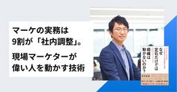
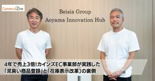
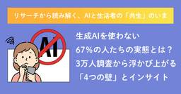

MarkeZine:新着一覧
https://markezine.jp/
翔泳社が運営するマーケター向け専門メディア。MarkeZineはデジタルを中心とした広告・マーケティングに関する情報を多角的な視点で毎日提供します。
フィード
【お知らせ】来週開催のMarkeZine Day、一部再度増席・事前登録締切を延長しました
MarkeZine:新着一覧
9月8日（火）・9日（水）に開催する「MarkeZine Day 2026 Autumn」について、事前登録の申込締切を延長するとともに、満席となっていた一部セッションの座席を追加でご用意しました。参加をご検討中の方は、この機会にぜひお申し込みください。
1日前
行動ログもAIインタビューも活かし方次第。モニタスが伴走するCX向上と「利益」創出のサイクル
MarkeZine:新着一覧
近年、企業が保有する購買・行動ログデータは急増している。しかし、膨大なデータを抱えながら、それを顧客理解や実際の「利益」へつなげられずに悩んでいるケースも多い。自社会員のデータ取得SaaS「supercolo」を提供してきたモニタスは、このような状況を受け止め、同サービスをツール提供にとどまらない「伴走型支援プログラム」へと進化させているという。同社代表の林氏が、次世代型マーケティング支援の全貌と顧客理解を「利益」に変える世界観を語った。
2日前
トップセールスの思考をAIで再現！新入社員でも真の顧客理解ができるようになるフレームワーク
MarkeZine:新着一覧
BtoB企業において、真の顧客理解が一部のトップセールスに閉じてしまい、再現性が生まれない課題は多い。「BtoB Synergy FORUM 2026」に登壇したSALESCOREの中村俊一氏は、その要因が「情報×解釈」の構造化の難しさにあると指摘。トップセールスの思考プロセスを紐解き、情報を構造化した上で顧客理解にAIを活用する要諦を解説した。本稿ではその内容をレポートする。
2日前
顧客にとって良い記憶をいかに積み重ねるか『CX経営の教科書』著者が語るマーケターの役割と10の視点
MarkeZine:新着一覧
CXという言葉が様々な部門、領域で使われています。今回、「実務者が選ぶマーケティング本大賞2026」準大賞を受賞した『いちばんやさしいCX経営の教科書 顧客体験を見直し”選ばれる会社”になる』の著者である白根英昭氏に、CX経営の本質や、マーケターが意識したい「10のCX視点」についてうかがいました。
2日前
データのオープン化×権限移譲が「即改善」を生む。ファイターズ三谷氏に聞くCX戦略 1
1
MarkeZine:新着一覧
2023年に開業した「北海道ボールパークFビレッジ」は、試合のない日も多くの人を惹きつける。本記事では、ファイターズ スポーツ＆エンターテイメントの常務取締役事業本部長を務める三谷仁志氏にインタビューを実施。既成概念を覆すCX設計の裏側から、120万IDのデータ活用、テナントとの共創、さらにはお客様の声を即時反映するPDCAまでを深掘り。スポーツビジネスの枠を超え、あらゆるマーケターに役立つLTV極大化のヒントに迫る。
2日前

マーケの実務は9割が「社内調整」。現場マーケターが偉い人を動かす技術
MarkeZine:新着一覧
あなたは社内調整は好きですか？ 20年以上現場を伴走してきたWACULの垣内勇威氏は、「マーケティング実務の9割は社内調整」だと断言します。本稿では、垣内氏の新刊『なぜ定石だけでは組織は動かないのか？』をもとに、マーケターの主戦場である社内調整を突破し、組織を動かす実践論をお届けします。偉い人を巻き込む鍵となる「冒険者」と「サポーター」の2つのタイプとは？
2日前
あなたは顧客を過小評価していないか？ AIで誰でも分析できる時代、データ（過去）を未来につなげるには
MarkeZine:新着一覧
2026年7月9日、CXプラットフォーム「KARTE」などを展開するプレイドが、リアルカンファレンス「X DIVE 2026」を開催した。今年のテーマは「価値を創るデータとは何か」。AIの浸透にともなってデータの重要性がいっそう増す中、同社 代表取締役 CEO 倉橋健太氏、ペンシルベニア大学 ウォートンスクール 教授 ピーター・フェーダー氏、東京大学大学院 経済学研究科･経済学部教授 柳川範之氏が、これからの企業経営の在り方を探った。
3日前
CPA高騰でも1,400件の新規商談を創出したTOKIUM 新規顧客接点は“面”で設計せよ
MarkeZine:新着一覧
Web広告のCPA高騰や、AI普及にともなうSEOトラフィックの急減など、数多くのBtoB企業が新規顧客獲得において深刻な手詰まりに陥っている。獲得コストが上昇し続け、従来のマーケティング手法が通用しづらくなった今、企業はどのような打ち手を講じるべきなのだろうか。2026年7月に開催された「BtoB Synergy FORUM」の基調講演では、才流の栗原康太氏がモデレーターを務め、売上高成長率219.5％を達成したTOKIUMのマーケティングリーダー・戸田博夢氏が登壇。逆風を乗り越えるための具体的な戦略と実行プロセスが語られた。本稿ではその模様をレポートする。
3日前

4年で売上3倍！カインズEC事業部が実践した「泥臭い商品登録」と「在庫表示改革」の裏側
MarkeZine:新着一覧
ホームセンター大手のカインズは、この4年間でEC売上を数十億伸ばし、改革前と比較して約3倍の規模へと急成長させた。停滞していた事業をいかにして立て直したのか。その裏側には、徹底した商品登録によるSEO強化、実店舗を活かした在庫表示の改革、そして月間6,000万円の売上を創出する「同梱チラシ」などの地道な取り組みがあった。EC事業部長の長谷川氏と、EC販売部部長の田村氏に、売上拡大のロジックと今後の展望について伺った。
3日前

生成AIを使わない67％の人たちの実態とは？3万人調査から浮かび上がる「4つの壁」とインサイト 1
MarkeZine:新着一覧
QOが実施した全国3万人への大規模調査から、生活者と生成AIとの関係性を可視化する本連載。第1回では、生成AI現利用者（33％）の中に存在する6つの生活者タイプを紹介しました。第2回で焦点を当てるのは、その裏側にいる約3分の2のマジョリティ──非利用者です。調査からは、この層の前に立ちはだかる「4つの壁」の構造が見えてきました。定量調査の結果に加えて、未利用者・離脱者に対して実施したAIインタビュー定性調査の結果も交えながら、壁ごとに異なる生活者の実像と、非利用者を動かすためのアプローチを読み解きます。
3日前